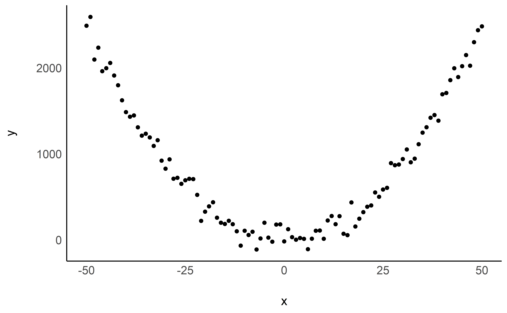
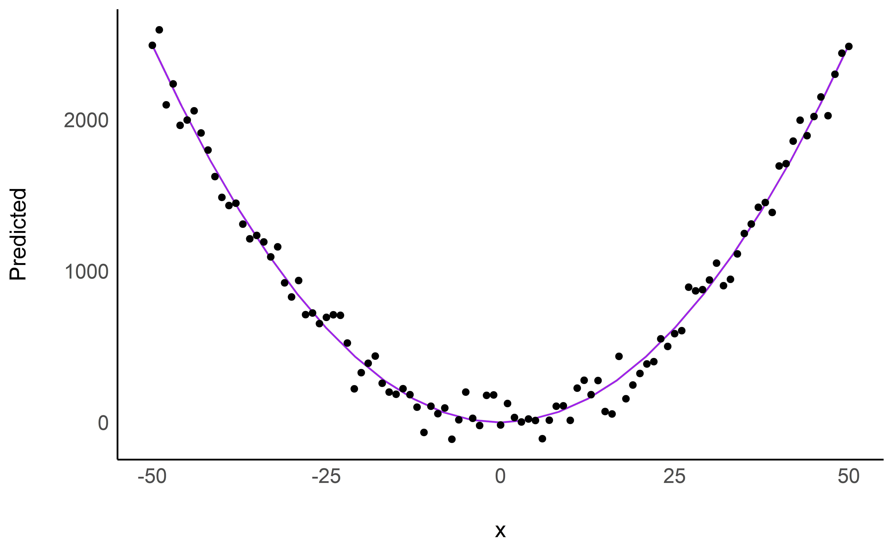
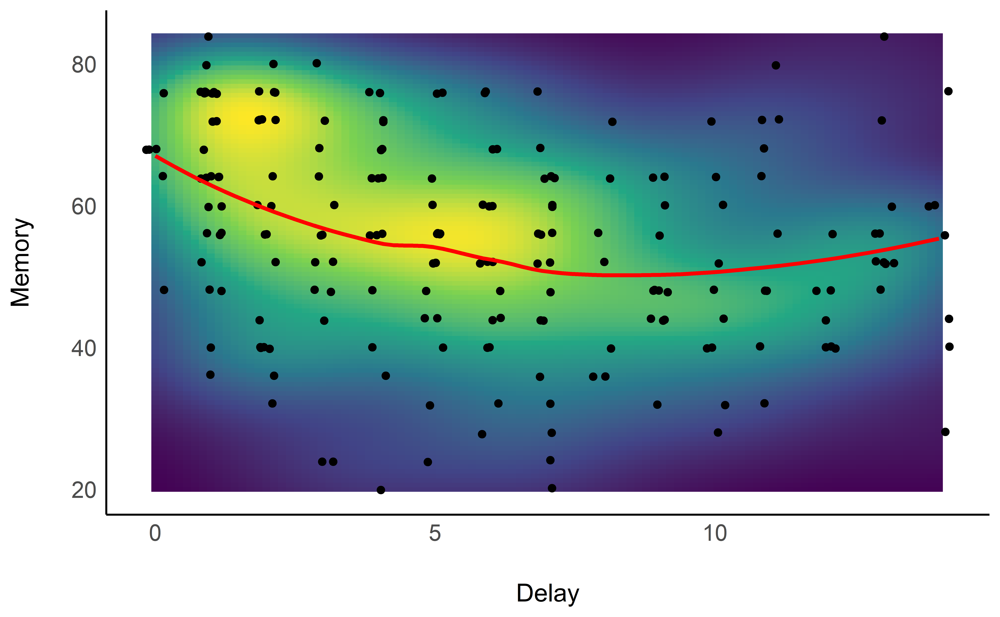
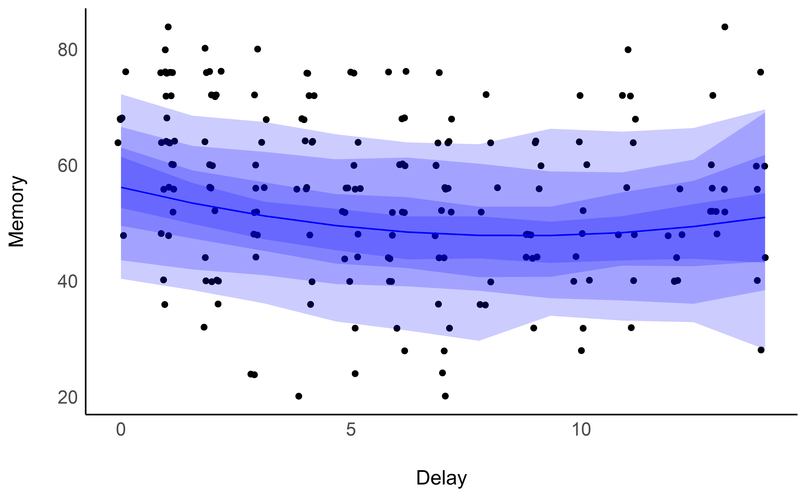

vignettes/estimate_smooth.Rmd
estimate_smooth.RmdThis vignette will present how to model and describe non-linear relationships using estimate. Warning: we will go full Bayesian. If you’re not familiar with the Bayesian framework, we recommend starting with this gentle introduction.
Most of relationships present in nature are non-linear, consisting of quadratic curves or more complex shapes. In spite of that, scientists tend to model data through linear links. Reasons for that include technical and interpretation complexity.
However, advances in software makes modelling of non-linear relationship very straightforward (insert link to future blogpost). Nevertheless, the added cost in terms of intepretation, report and communication often remain a barrier, as the human brain more easily understands linear relationhips (e.g., as this variable increases, that variable increases).
The estimate package aims at easing this step by summarising non-linear curves in terms of linear segments.
Let’s start by creating a very simple dataset:
data <- data.frame(x = -50:50) # Generate dataframe with one variable x
data$y <- data$x^2 # Add a variable y
data$y <- data$y + rnorm(nrow(data), mean = 0, sd = 100) # Add some gaussian noiselibrary(ggplot2) # For plotting
library(see) # For nice themes
ggplot(data, aes(x = x, y = y)) +
geom_point() +
see::theme_modern()
Looking nice! Now let’s model this non-linear relationship using a polynomial term:
Let’s continue with visualising the fitted model:
library(modelbased)
estimate_link(model) %>%
ggplot(aes(x = x, y = Predicted)) +
geom_line(color = "purple") +
geom_point(data = data, aes(x = x, y = y)) + # Add original data points
see::theme_modern()
Altough a visual representation is usually recommended, how can we verbally describe this relationship?
> Part | Start | End | Size | Trend | Linearity
> ---------------------------------------------------
> 1 | -50.00 | -0.75 | 49.50% | -25.17 | 0.94
> 2 | -0.75 | 50.00 | 50.50% | 24.43 | 0.93estimate_smooth will decompose this curve into linear parts, returning their size (the percentage of the curve of the segment), and the trend (positive or negative). We can now say that that the relationship can be summarised as one negative link and positive link, with a changing point located roughly around 0.
We will download and use a dataset where participants had to answer questions about the movie Avengers: Age of ultron (combined into a memory score) a few days after watching it at the theater (the delay variable). Let’s visualise how the Delay, in days, influences the Memory score, by plotting the data points and a raw loess fit on this raw data.
library(ggplot2)
library(dplyr)
library(see)
# Load the data and filter out outliers
df <- read.csv("https://raw.githubusercontent.com/DominiqueMakowski/publications/master/makowski_2017_being/data/data.csv") %>%
filter(Delay <= 14,
Memory >= 20)
# Plot the density of the point and a loess smooth line
ggplot(df, aes(x=Delay, y=Memory)) +
stat_density_2d(geom = "raster", aes(fill = ..density..), contour = FALSE) +
geom_jitter(width = 0.2, height = 0.2) +
scale_fill_viridis_c() +
geom_smooth(method = "loess", color = "red", se = FALSE) +
theme_modern(legend.position = "none")
Unsuprisingly, the forgetting curve appears to be non-linear, as supported by the litterature suggestiong a 2nd order polynomial curve (Averell and Heathcote 2011).
We can fit a Bayesian linear mixed regression to model such relationship, adding it a few other variables that could influence this curve, such as the familiarity with the characters of the movie, the language of the movie, the immersion (2D/3D).
library(rstanarm)
model <- stan_lmer(Memory ~ poly(Delay, 2) * Characters_Familiarity + (1|Movie_Language) + (1|Immersion), data = df)We can visualise the link between the Delay and the Memory score by using the estimate_link.
library(modelbased)
estimate_link(model, target = "Delay", ci = c(0.50, 0.69, 0.89, 0.97)) %>%
ggplot(aes(x=Delay, y=Median)) +
geom_jitter(data = df, aes(y=Memory), width = 0.2, height = 0.2) +
geom_ribbon(aes(ymin = CI_low_97, ymax = CI_high_97), alpha = 0.2, fill = "blue") +
geom_ribbon(aes(ymin = CI_low_89, ymax = CI_high_89), alpha = 0.2, fill = "blue") +
geom_ribbon(aes(ymin = CI_low_69, ymax = CI_high_69), alpha = 0.2, fill = "blue") +
geom_ribbon(aes(ymin = CI_low_50, ymax = CI_high_50), alpha = 0.2, fill = "blue") +
geom_line(color = "blue") +
theme_modern(legend.position = "none") +
ylab("Memory")
It seems that the memory score starts by decreasing, up to a point where it stabilizes (and even increases, which might be related by some other factors, such as discussions about the movie, watching of youtube reviews and such). But what is the point of change?
> Part | Start | End | Size | Trend | Linearity
> -------------------------------------------------
> 1 | 0.00 | 6.47 | 46.50% | -0.09 | 0.98
> 2 | 6.47 | 6.68 | 1.50% | -0.01 | 0.68
> 3 | 6.68 | 6.89 | 2.00% | -0.01 | 0.63
> 4 | 6.89 | 6.96 | 0.50% | |
> 5 | 6.96 | 7.18 | 2.00% | -0.01 | 0.77
> 6 | 7.18 | 7.25 | 0.50% | |
> 7 | 7.25 | 7.60 | 3.00% | -0.03 | 0.93
> 8 | 7.60 | 7.74 | 1.50% | 0.00 | 0.06
> 9 | 7.74 | 7.88 | 1.00% | |
> 10 | 7.88 | 8.23 | 2.50% | 0.00 | 0.02
> 11 | 8.23 | 8.30 | 1.00% | |
> 12 | 8.30 | 8.72 | 3.00% | 0.01 | 0.26
> 13 | 8.72 | 8.79 | 0.50% | |
> 14 | 8.79 | 10.06 | 9.50% | 0.03 | 0.95
> 15 | 10.06 | 10.20 | 1.00% | |
> 16 | 10.20 | 10.41 | 2.00% | 0.05 | 0.82
> 17 | 10.41 | 10.48 | 1.00% | |
> 18 | 10.48 | 14.00 | 25.00% | 0.06 | 0.97Averell, Lee, and Andrew Heathcote. 2011. “The Form of the Forgetting Curve and the Fate of Memories.” Journal of Mathematical Psychology 55 (1): 25–35. https://doi.org/10.1016/j.jmp.2010.08.009.